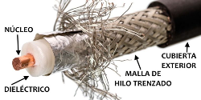

Cable Coaxial
También conocido como cable coax o coaxil, es un tipo de cable utilizado para transmitir señales eléctricas de alta frecuencia. A diferencia de los cables comunes, posee un diseño especial que lo blinda contra las interferencias electromagnéticas externas, garantizando una transmisión de datos más limpia y confiable.
